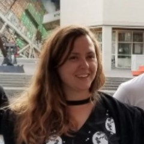

Recognizing Invisible Labor in the PSA
One of the biggest threats to the sustainability of large-scale collaborations is the rewards system in place for scholarly labor. Scholarly labor is rewarded with credit for scholarly products. Typically, people scan authorship lists to observe whom to credit, with the lion’s share going to the first- and last-listed authors. This disproportionate assignment of credit serves as a disincentive for collaborating on papers with author lists that are too long: if the bulk of the credit goes to the first and last authors, middle authorship is only worthwhile when earned through a minimal investment of effort. This disincentive weighs especially heavily on multi-site projects, which require dozens, if not hundreds, of people to pull off successfully. The problem is still harder in a standing organization like the PSA. Maintaining an organization requires a lot of administrative labor – labor that is often invisible if there aren’t mechanisms in place to surface it. In academia, we see this invisible labor problem on a small scale in the typical treatment of academic lab managers: these people are necessary to produce the science that graces academic journals, but are seldom, if ever, properly credited. Given that the success of the PSA depends on ongoing administrative labor, we would like to find ways to disrupt the perverse incentive structure that inhibits standing collaborations in academia. The PSA already endorses a contributorship model of awarding credit for scholarly products and uses the CRediT taxonomy to show project contributions. We will also be unveiling the results of some ongoing initiatives to implement CRediT when we share the results of our first study. One additional initiative that we’ve started is to award stipends for the administrative roles that people fill for PSA studies. For now, we will only be giving six of these stipends, and the stipends themselves are relatively small – $400 – but, if we are able to secure regular sources of funding for the PSA, paying our staff is one of our highest priorities. You can help us increase the size and number of these stipends by donating to our Patreon (and you can read more about our ongoing Patreon campaign here). Finally, we want to make some of the invisible contributions to the PSA more visible by highlighting some of the contributors. Below, we profile five of these people, each at a different place in their scientific career, all of whom have made outstanding contributions to the PSA and its projects. Only by recognizing the value of contributions like theirs will we subvert the system that heaps credit on the few at the expense of the many. Profiles of five major contributors to the PSA Nicholas Coles Nicholas Coles is a fifth year Social Psychology PhD student at the University of Tennessee. He’s a member of both the Project Monitoring and Community Building committees at the PSA. Nick has been a rockstar Project Monitor for PSA001 (face perception). As the first project monitor for any PSA project, he has helped define what project monitors do, and has made a myriad of tracking sheets, and forms, and other materials that have served as templates for similar tools in other PSA projects. As the PSA001 project monitor, Nick has also served as the primary point of contact for an author list of nearly 200 people. Nick’s efforts have helped produce a data collection effort spanning 11,000 participants, 48 countries, and 28 languages. As if that weren’t enough, Nick also developed a web application that displays an interactive map of the PSA network. If you want to find out more about Nick and his work, check out his website. Anna Szabelska Anna finished her PhD in Cognition at Queen’s University Belfast and is looking for her next adventure. She was recently accepted to the NASA Datanauts project, a program that applies data science methods to NASA datasets. This program, along with her work for the PSA, is the coolest thing that’s happened in her professional life.  Anna has been an exceptionally active member of the PSA from the very start. She was a founding member of the Data and Methods Committee and helped draft its bylaws. She has also co-led a project to create a standard psychology dataset format (Psych-DS), which would enable projects ranging from automated meta-analysis to standardized data analysis tools. She has also played a critical role on PSA002 (object orientation), and in that capacity, she has helped define what methodologists do in PSA studies. One of the more interesting outcomes from that work is a novel meta-science initiative – prediction markets to determine how accurate experts are in predicting whether the object orientation effect replicates in a given language. Finally, Anna has shared her enthusiasm for the PSA with anyone who is willing to listen, giving official talks on the PSA for RLadies Dublin, Women Who Code, and Google Women Techmakers, and co-organizing a PSA workshop and unconference. You can find more about Anna (including her CV) at her LinkedIn profile. Jeremy Miller Jeremy Miller is a Professor of Psychology at Willamette University in Salem, OR. Jeremy is on sabbatical and has generously volunteered a chunk of his sabbatical time to working with the PSA. Jeremy is the Project Monitor for two PSA projects, PSA002 (object orientation) and PSA003 (gendered prejudice), which have been bundled together for the purpose of efficient data collection. Jeremy coordinates communications between the many, many parties involved in pulling off a project involving 49 labs, 16 languages, and two separate projects, with an eye toward ensuring all parties adhere to the PSA’s ever-evolving policies. His effectiveness in this role is informed by his experience as the head of a data collection lab for PSA001 (face perception). Jeremy also serves on the Project Monitor committee, working with Project Monitors across PSA projects to ensure that the PSA uses its resources effectively and efficiently. You can read more about Jeremy and his lab at his lab website. Marton Kovacs Marton is a second-year master's student at Eotvos Lorand University, Hungary and is a huge fan of both the PSA and the broader movement to improve psychological research. He is planning to apply to PhD programs to do meta-scientific research, focusing specifically on ways to increase research efficiency by minimizing human error. Even though Marton is relatively early in his scientific career, he has played a critical role in swiftly moving the PSA006 (moral dilemmas) from conception to a submitted Registered Report. As Data Manager, he drafted the data management plan that will ensure that the data from more than 130 participating labs are credible, transparently shared, and efficiently collected. He is also helping develop tools that will help solve some of the unique problems that large-scale collaborations face. This includes the problem of properly crediting contributions mentioned in this post: Marton is developing a Shiny app that helps authors create human- and machine-readable contributorship information so that the “invisible contributions” to multi-author projects are made visible. You can find out more about Marton on his website. Sophia Christin Weissgerber Sophia C. Weissgerber recently started a postdoc position in cognitive psychology at the University of Kassel in Germany. She is survey manager for PSA004 (true belief), a partnership with the Collaborative Replication and Education Project (CREP), which uses multi-site replications to provide training and professional growth experiences for students and instructors. Since Sophia is a huge fan of the CREP-project, she likes to expose her 3rd semester students to real-world hands-on research experience, for example replication of Griskevicius et al. (2010).  Sophia performed a feat of programming wizardry for PSA004, implementing an experimental design in the online platform SocSciSurvey for a project involving 54 sites (and counting), as well as 26 countries and 12 languages. Each site requires a unique survey and survey link, so Sophia also does extensive coordination with the participating sites to personalize each survey for each site. This labor is critical for the project’s success. Sophia also enjoys participating in other PSA-projects, e.g. PSA001 (face perception). She is really excited about the PSA community and work (quote: "super-awesome") and together with Hans IJzerman, Rick Klein, and Anna van 't Veer, she is currently working on a non-technical primer on how to conduct code review in psychological science. You can read more about Sophia and her work on her website.
Sophia performed a feat of programming wizardry for PSA004, implementing an experimental design in the online platform SocSciSurvey for a project involving 54 sites (and counting), as well as 26 countries and 12 languages. Each site requires a unique survey and survey link, so Sophia also does extensive coordination with the participating sites to personalize each survey for each site. This labor is critical for the project’s success. Sophia also enjoys participating in other PSA-projects, e.g. PSA001 (face perception). She is really excited about the PSA community and work (quote: "super-awesome") and together with Hans IJzerman, Rick Klein, and Anna van 't Veer, she is currently working on a non-technical primer on how to conduct code review in psychological science. You can read more about Sophia and her work on her website.